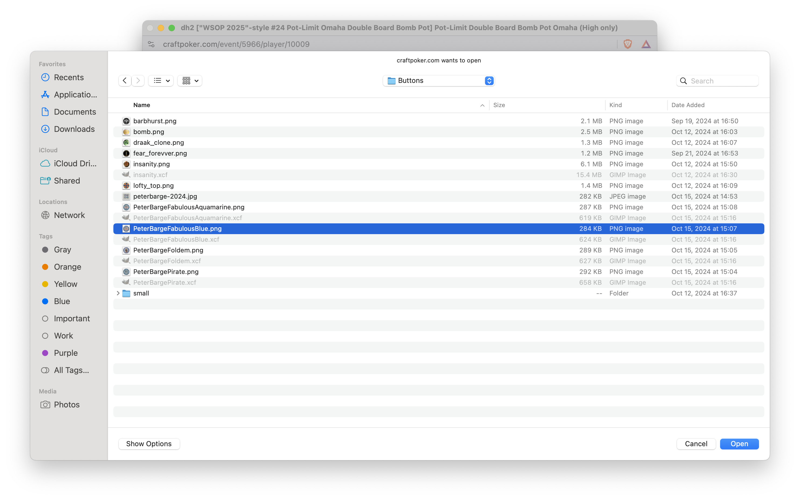
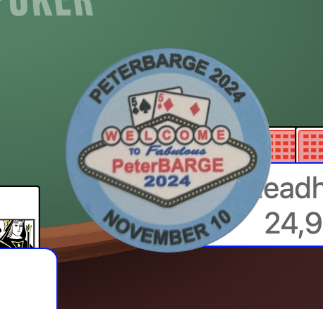

Customizable Dealer Buttons
How to use
By default, the dealer button at a table is an off-white circle with a red letter B inside it. It can be seen here to the upper-left of deadhead:

If you hover over the dealer button, it gets larger and if you click the dealer button, you get an "easter-egg", a narcoleptic dinosaur:
!A close-up of the magnified narcoleptic dinosaur](./customizable-buttons/easter-egg-dino.png "The Hidden Other Button Face")
However, if you shift-click the button, you get a picker that allows you to select an image to send directly to your client (i.e., the image is never sent to the mb2 server):

After you send the image, that will be your button:

The two other built-in images are still available. You can cycle through all your button images by repeatedly clicking on the button.
Where its stored
Since the image was sent directly to your browser (e.g., Chrome), it will not show up if you run a different browser (e.g., Safari). However, if you're adept with developer tools, you can see that your button has been stored in your browser's IndexedDB:

Why it matters
This is a proof-of-concept that demonstrates a way that mb2 can be customized using assets that belong to the player and never travel to the mb2 server. Eventually, much more than the button will be customizable and people will be able to make and share asset-packs that allow their tables and the lobby to look how they like.
For the purpose of sharing with others, eventually it will be possible to upload assets to an mb2 server, but that will be in addition to private client-side only loading and will be completely optional.
For the curious programmer
The loading and display of the custom buttons is done entirely using Rust. Mb2's source code is private, but a stand-alone client-side loader that demonstrates how this is done is available on GitHub.